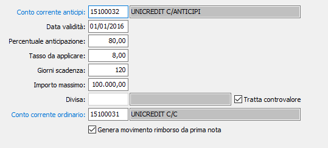

Condizioni anticipazione
La tabella consente di definire una serie di condizioni indispensabili per la creazione e gestione della distinta di anticipazione; le condizioni possono essere inserite per conto corrente anticipi e data validità.

conto corrente anticipi: campo obbligatori, indica il conto corrente anticipi, che deve essere presente nella tabella Conti correnti.
data validità: indica la data di inizio validità delle condizioni per il conto corrente anticipi.
percentuale anticipazione: indicare la percentuale che la banca concede sul totale di ogni rata presentata per l'anticipazione.
tasso da applicare: indicare il tasso da applicare in base alle condizioni bancarie.
giorni scadenza: numero di giorni da incrementare alla data di elaborazione della distinta di presentazione anticipi e sarà filtro di selezione delle rate di scadenza future
importo massimo: indicare l'importo massimo concesso dalla banca per la presentazione in distinta.
divisa: il codice divisa del conto di anticipazione. Indicando una divisa specifica viene stabilito che la distinte che saranno preparate dovranno contenere scadenze della stessa divisa. Questa casistica si rivela utile ad esempio in presenza di conti valutari con cui si intende gestire in modo esclusivo la divisa utilizzata. La presenza di questo campo compilato esclude la possibilità di trattare il controvalore.
tratta controvalore: se spuntato indica che per il conto di anticipazione è possibile creare delle distinte di anticipazione in diverse divise. Questo determina che in fase di calcolo dell'importo massimo gestito verrà considerato il controvalore in moneta di conto anzichè il valore in divisa. La spunta su questa casella esclude la possibilità di avere una divisa specifica.
conto corrente ordinario: campo necessario e si desidera effettuate le movimentazioni contabili in fase di accensione/rimborso dell’anticipo; deve essere presente nella tabella Conti correnti.
Genera movimento rimborso da prima nota: se la casella è spuntata è possibile utilizzare la prima nota contabile per registrare il movimento di rimborso, altrimenti sarà possibile utilizzare solo l'apposita procedura.